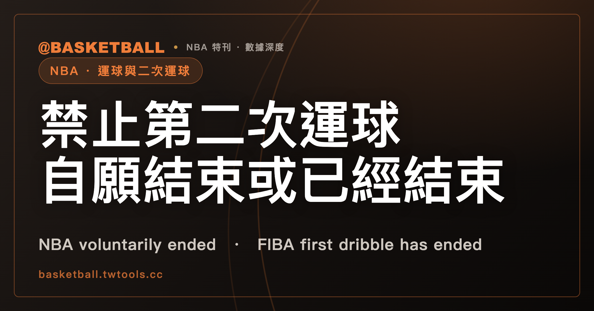

禁止第二次運球的那一句：NBA 2025-26 寫「自願結束」，FIBA 2026 版寫「已經結束」
NBA 2025-26 規則書 Rule 10 §II(c) 寫球員在 voluntarily ended 第一次運球之後不得再運球；FIBA 2026 版規則書（2026 年 10 月 1 日生效）Article 24.2 寫的是 first dribble has ended，句尾再列 3 項可以再運球的情形。NBA 的投籃一項要求球碰到 backboard 或 basket ring，FIBA 的投籃一項沒有寫這個條件。

新手村｜規則入門・運球結束與二次運球
本文依據兩份規則書：NBA 2025-26 官方規則書（Rule 4 §II 與 Rule 10 §II），以及 FIBA 2026 版規則書（2026 年 10 月 1 日生效，Article 24）。兩份都是本站 2026 年 10 月 4 日取得、保存在本機的全文文字檔。
運球（dribble）什麼時候算結束？結束之後，什麼時候才不能再運球？兩份規則書都有答案，措辭卻不一樣。NBA 2025-26 禁止再運球的那一句，寫的是 voluntarily ended，也就是「自願結束」第一次運球；FIBA 2026 版寫的是 first dribble has ended。
讀完這篇，你可以拿一個運球情境，分別用兩份規則書的字面判斷：運球在哪裡結束，之後還能不能再運球。
運球的定義：FIBA 2026 版另寫了開始的條件，NBA 2025-26 Rule 4 §II 沒有開始的定義句
談運球怎麼結束之前，先看兩邊怎麼定義運球。NBA 2025-26 規則書 Rule 4 §II 的開頭句，把 dribble 寫成「in control 的球員 throws or taps 球到地板，所造成的球的移動」；FIBA 2026 版 Article 24.1.1 寫成「in control 一顆 live ball 的球員，在場上 throws, taps, rolls or bounces 球，所造成的球的移動」。FIBA 在 Article 24.1.2 第 1 段另寫了運球的開始：球員在場上取得 live ball 的控制後做出這些動作，並且在球碰到另一名球員之前再次碰球，運球就開始了。NBA 2025-26 的 Rule 4 §II 全節是開頭句加上 (a) 款，沒有寫運球從哪一刻開始；全書在本機快照裡也查無開始的定義句。
運球何時結束：NBA 2025-26 規則書列 8 款，FIBA 2026 版的結束句寫 2 種
NBA 2025-26 規則書 Rule 4 §II(a) 的引導句是 The dribble ends when the dribbler，後面接 8 款：
| 款 | 規則書原文 | 意思 |
|---|---|---|
| (1) | Touches the ball simultaneously with both hands | 雙手同時碰球 |
| (2) | Permits the ball to come to rest while he is in control of it | 仍在控制球時，讓球靜止 |
| (3) | Tries for a field goal | 嘗試投籃（field goal） |
| (4) | Throws a pass | 傳球 |
| (5) | Touches the ball more than once while dribbling, before it touches the floor | 運球時，在球碰到地板之前多次碰球 |
| (6) | Loses control | 失去控制 |
| (7) | Allows the ball to become dead | 讓球變成 dead |
| (8) | Otherwise gathers the ball (See Rule 4, Section III(b)) | 以其他方式 gather 球，括號指向 Rule 4 §III(b) |
FIBA 2026 版 Article 24.1.2 的結束句是一句話，用 or 連接 2 種情形：球員以雙手同時碰球（touches the ball with both hands simultaneously），或讓球停在一隻手或兩隻手裡（permits the ball to come to rest in one or both hands）。
兩份清單各列各的，款數不同，措辭也不同。例如 NBA 的 (2) 帶著「仍在控制球」的限定，FIBA 寫的是 in one or both hands。「2 種」只指 24.1.2 的結束句本身；Article 24 其他款次提到運球結束的地方（24.1.4 的 at the end of a dribble、24.2 的 has ended），是在使用這個詞，沒有另外列出結束情形。
表裡有 2 款各連到別的主題。(3) Tries for a field goal 的原文沒有括號指向 Rule 4 §XI；這裡連到本站的投籃動作（act of shooting）入門，是本站的安排，不是條文的指引。(8) 的 gather 定義在 Rule 4 §III，見本站走步、gather 與腳步入門。
禁令句的字面不同：NBA 2025-26 限定 voluntarily ended，FIBA 2026 版另列除外
兩句原文如下：
| 規則書 | 禁止第二次運球的那一句 |
|---|---|
| NBA 2025-26，Rule 10 §II(c) | A player may not dribble a second time after he has voluntarily ended his first dribble. |
| FIBA 2026 版，Article 24.2 | A player shall not dribble for a second time after the player’s first dribble has ended unless the player has lost control of a live ball on the court because of one of the following: |
NBA 這一句的限定語是 voluntarily ended。在本機保存的 NBA 2025-26 規則書全文裡，含 voluntar 字樣的只有這一行；Rule 4 §II(a) 的 8 款，沒有一款附註自願與否。FIBA 這一句寫 has ended，沒有 voluntarily。句尾另有 unless 子句：除非球員 lost control of a live ball on the court，而且原因屬於後面 3 項之一，否則適用這個禁令。
有幾處條文，原文沒有接起來，這裡各寫各的，留給讀者自己判斷。FIBA 2026 版 Article 24.1.3 把 accidentally loses and then regains control of a live ball on the court 定義為 fumbled the ball，24.2 的第 3 項也用到 fumble；原文沒有把 24.1.3 和 24.2 的禁令句連起來，所以 FIBA 有沒有一個「非自願」的概念，禁令句的字面看不出來。
NBA 這一側，(a)(6) Loses control 是運球結束的 8 款之一，Rule 10 §II(e) 的 3 項是 lost control 的原因，(c) 限定 voluntarily ended。Rule 4 §II 與 Rule 10 §II 沒有寫這三處怎麼合讀，也沒有寫「因為 (e) 3 項以外的原因失去控制後再運球」要怎麼處理。NBA 的 voluntarily 和 FIBA 的 unless 子句作用上是不是同一回事，本文不判斷；這裡比的是文字，不是判罰結果。
可以再運球的 3 項：投籃那一項，NBA 2025-26 要求球碰到 backboard 或 basket ring，FIBA 2026 版沒有 provided 條件
NBA 2025-26 規則書 Rule 10 §II(e) 的引導句是：球員 lost control of the ball，如果原因是下面 3 項之一，可以 dribble a second time。
- (1) A field goal attempt at his basket, provided the ball touches the backboard or basket ring：at his basket 的投籃嘗試，條件是球碰到 backboard 或 basket ring。
- (2) An opponent touching the ball：對手碰到球。
- (3) A pass or fumble which touches his backboard, basket ring, or is touched by another player：傳球或 fumble，而且那顆球碰到他的 backboard、basket ring，或被另一名球員碰到。
FIBA 2026 版 Article 24.2 的 3 項，共同前提是 lost control of a live ball on the court：
- 第 1 項：A shot for a goal。
- 第 2 項：The ball is touched by an opponent。
- 第 3 項：On a pass or fumble the ball touches or is touched by another player。
投籃那一項，是兩邊的文字在條件上不同的地方。NBA (e)(1) 帶著 provided 子句，球要碰到 backboard 或 basket ring；FIBA 第 1 項只寫 A shot for a goal，沒有寫球須碰到什麼。第 3 項的文字也不同：NBA (e)(3) 有 his backboard 和 basket ring，FIBA 第 3 項沒有出現 backboard 或 basket ring。
FIBA 另有 2 款提到籃框方向與籃板，原文都沒有和 24.2 連起來。Article 15.1.1 把 A shot for a goal 定義為球被持在手中、再朝對手的籃框 thrown into the air。Article 24.1.4 第 7 項把 Throwing the ball against the backboard and regaining the control of the ball 列為不算 dribble 的情形，這一項在 24.1.4，不在 24.2 的 3 項之內。
「二次運球」是中文慣稱：double dribble 在 NBA 2025-26 只見於 Rule 14 舉例清單，FIBA 2026 版只見於手勢圖說
Rule 10 §II 是 NBA 規則書談運球的那一節，卻沒有用到 double dribble 一詞。這個詞在 NBA 2025-26 規則書全文只出現在 Rule 14（教練挑戰）§I(d)(4)，列在不能用挑戰觸發重播檢視的違例舉例裡，和 traveling、carrying、flopping 並列，沒有定義；FIBA 2026 版只出現在附錄 A 裁判手勢圖頁的圖說（DOUBLE DRIBBLING），同樣沒有定義。所以「二次運球」是中文慣稱，不是規則書用語；本文用這個說法，指的是 Rule 10 §II(c) 與 Article 24.2 的禁令句。教練挑戰的舉例清單，見本站教練挑戰入門。
Rule 10 §II 全節有 (a) 到 (e) 5 款，加上末尾的 PENALTY 款。(c)、(e) 以外的 3 款講的不是運球結束：(a) A player shall not run with the ball without dribbling it，球員不得不運球就帶球跑；(b) in control of a dribble 的球員踩到或踩出界線之後，不得回界內繼續運球；(d) 運球時，手的任何部位不得放到球下面，再 carry 球移動，或讓球 pause 之後繼續運球。PENALTY 款的位置在 (e) 之後，寫的是 Loss of ball，原文沒有逐款標出適用哪幾款；罰則與發球位置見本站違例與犯規有什麼不同。FIBA 2026 版的手在球下一款是 Article 24.1.2 第 2 段，24.1.4 列了 7 項不算 dribble 的情形；Article 24 之下沒有獨立的罰則款，違例的一般罰則在 Article 22.2，句末帶著 unless otherwise stated in these rules。
練習：4 個假設的運球情境，用兩份規則書的字面各走一遍
做法是 3 步，這是本文的讀法，不是規則書的步驟：先找運球在哪一款結束，再看禁令句碰不碰得到，接著看 3 項可以再運球的情形有沒有一項對得上。
以下情境都是假設，沒有對應任何比賽，球隊和球員也都是代稱。讀的只有本文引過的條文（Rule 4 §II(a)、Rule 10 §II(c) 與 (e)、Article 24.1.2 與 24.2），走步等其他規則不在內，所以答案是這幾款的字面結果，不是完整的判決。涉及球員自己動作的情境（假設 1、2、4），題目都寫明是他自己決定的，所以 NBA (c) 的 voluntarily ended 在字面上讀得過去。
假設 1：甲隊某球員運球時，自己決定用雙手同時抓住球，接著想再運球
- NBA 2025-26：Rule 4 §II(a)(1)，雙手同時碰球，運球結束。(e) 的 3 項講的是失去控制的原因，題目裡球沒有脫手，3 項都對不上。(c) 的禁令字面適用。
- FIBA 2026 版：Article 24.1.2 結束句的第 1 種。球沒有脫手，24.2 的 unless 子句不成立，禁令字面適用。
假設 2：乙隊某球員運球時，自己讓球停在手中，接著再運球
- NBA 2025-26：Rule 4 §II(a)(2)，球員仍在控制球時讓球靜止，運球結束。題目沒有失去控制，(e) 的 3 項對不上，(c) 的禁令字面適用。
- FIBA 2026 版：Article 24.1.2 結束句的第 2 種，球停在手裡。unless 子句同樣不成立，禁令字面適用。
假設 3：丙隊某球員運球時，球被對手碰到，球離開他的控制，他重新拿到球後再運球
- NBA 2025-26：球離開控制，對應 Rule 4 §II(a)(6) Loses control。Rule 10 §II(e)(2) 寫 An opponent touching the ball，球員可以 dribble a second time。
- FIBA 2026 版：結束句的 2 種裡沒有 lost control。這個情境符合 Article 24.2 的前提 lost control of a live ball on the court，原因是第 2 項 The ball is touched by an opponent，unless 子句成立。不論運球算不算已經結束，禁令都不適用。
假設 4：丁隊某球員運球後自己決定朝對手的籃框投籃出手，球因為這次出手脫離他的控制，之後他重新拿到球
這個情境分兩種。
- 4a，球碰到 basket ring。NBA 2025-26：Rule 4 §II(a)(3) 運球結束，(e)(1) 的 provided 條件成立，可以 dribble a second time。FIBA 2026 版：第 1 項 A shot for a goal 成立，禁令不適用。兩邊的字面結果相同。
- 4b，球沒有碰到 backboard 或 basket ring，也沒有被任何人碰到。NBA 2025-26：(e)(1) 的 provided 條件不成立，(e)(2)、(e)(3) 也對不上；這時 (c) 的 voluntarily ended 怎麼讀，Rule 10 §II 沒有寫。FIBA 2026 版：第 1 項沒有 provided 子句，字面上成立。
4 個情境裡，兩邊字面讀起來不一樣的只有 4b 這一種。
常見問題
NBA 2025-26 規則書列了幾款運球結束的情形，FIBA 2026 版呢？
NBA 2025-26 規則書 Rule 4 §II(a) 以 (1) 到 (8) 列出 8 款；FIBA 2026 版（2026 年 10 月 1 日生效）Article 24.1.2 的結束句以 or 連接 2 種。款目見「運球何時結束」那一節。
NBA 2025-26 禁止再運球的那一句，和 FIBA 2026 版的寫法差在哪？
NBA 2025-26 規則書 Rule 10 §II(c) 寫球員在 voluntarily ended 第一次運球之後不得再運球；FIBA 2026 版 Article 24.2 寫 first dribble has ended，沒有 voluntarily，句尾另有 unless 子句。細節見「禁令句的字面不同」那一節。
運球中失去控制之後，還可以再運球嗎？
NBA 2025-26 Rule 10 §II(e) 與 FIBA 2026 版 Article 24.2 都列了 3 項可以再運球的原因：投籃、對手碰球、傳球或 fumble 之後球碰到指定對象（NBA 指定 backboard、basket ring 或另一名球員，FIBA 指定另一名球員）。NBA 的投籃一項要求球碰到 backboard 或 basket ring，FIBA 第 1 項沒有 provided 條件。細節見「可以再運球的 3 項」那一節。
double dribble 是規則書裡的條文用語嗎？
NBA 2025-26 規則書全文只有 Rule 14 §I(d)(4) 的不可挑戰舉例清單用到這個詞；FIBA 2026 版只在附錄 A 手勢圖頁的圖說出現。兩處都沒有定義，「二次運球」是中文慣稱。細節見談「二次運球」用語的那一節。
資料來源
- NBA Official Playing Rules 2025-26（封面 2025-26 OFFICIAL RULES）：Rule 4 §II（Dribble）、Rule 4 §III(b) 僅作 (a)(8) 括號指向處、Rule 10 §II（Dribble，(a) 到 (e) 款與 PENALTY 款）、Rule 14 §I(d)(4)。本機保存的全文文字檔，取得日 2026 年 10 月 4 日，無可點擊網址。
- FIBA Official Basketball Rules 2026 版（v1-1，封面 Valid as of 1st October 2026）：Article 24（24.1.1 到 24.1.4、24.2）、Article 15.1.1、Article 22.2、附錄 A 裁判手勢圖頁。本機保存的全文文字檔，取得日 2026 年 10 月 4 日，無可點擊網址。
- 範圍與版本：本文引用的 NBA 2025-26 規則書與 FIBA 2026 版規則書都是取得當日的版本；規則書會隨賽季或版本修訂，之後以官方最新版為準。文中「只有這一行」「只出現在」「查無」，都是對本機保存的全文搜尋的結果。兩份規則書裡原文沒有連起來的條文，本文各寫各的；本文比較的是條文字面，沒有討論實際判罰。